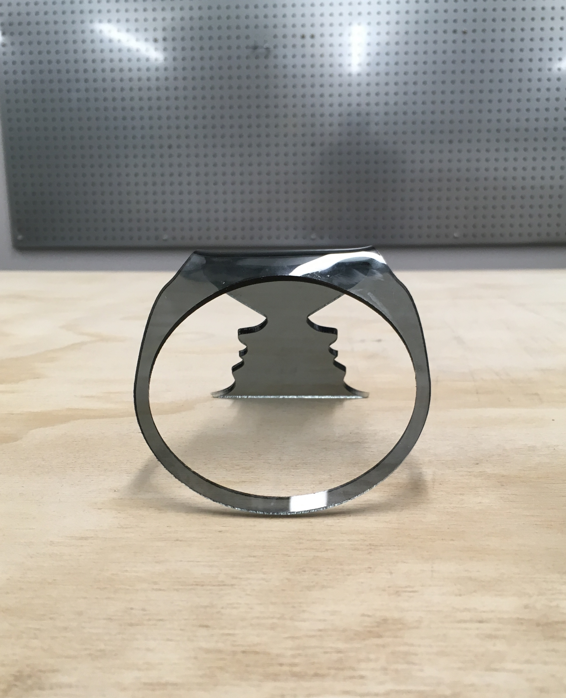
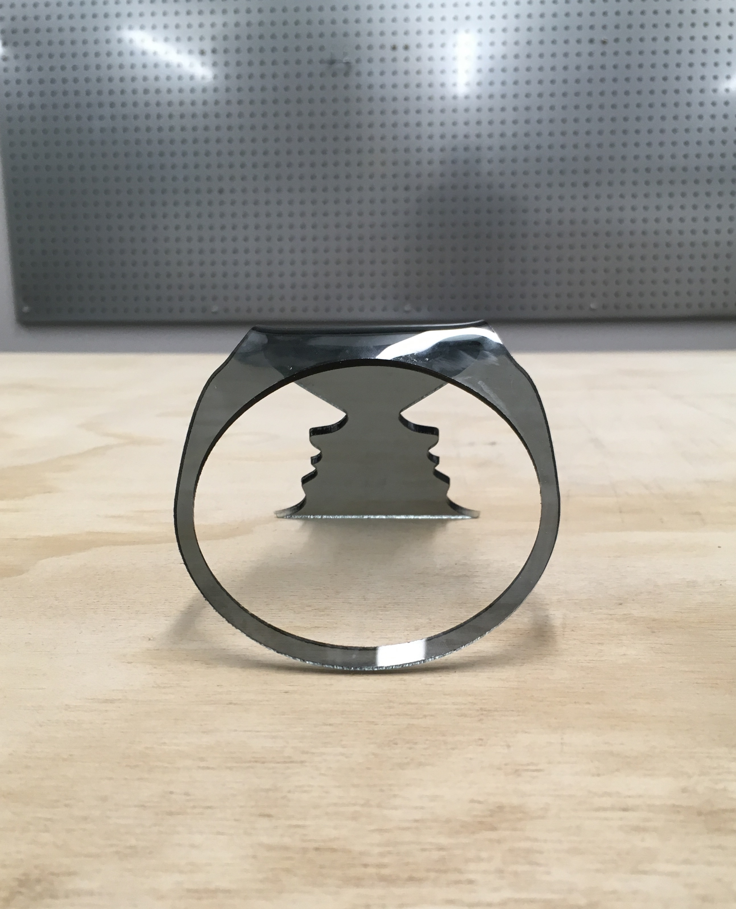
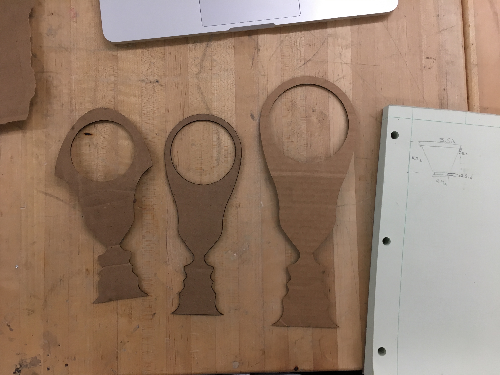
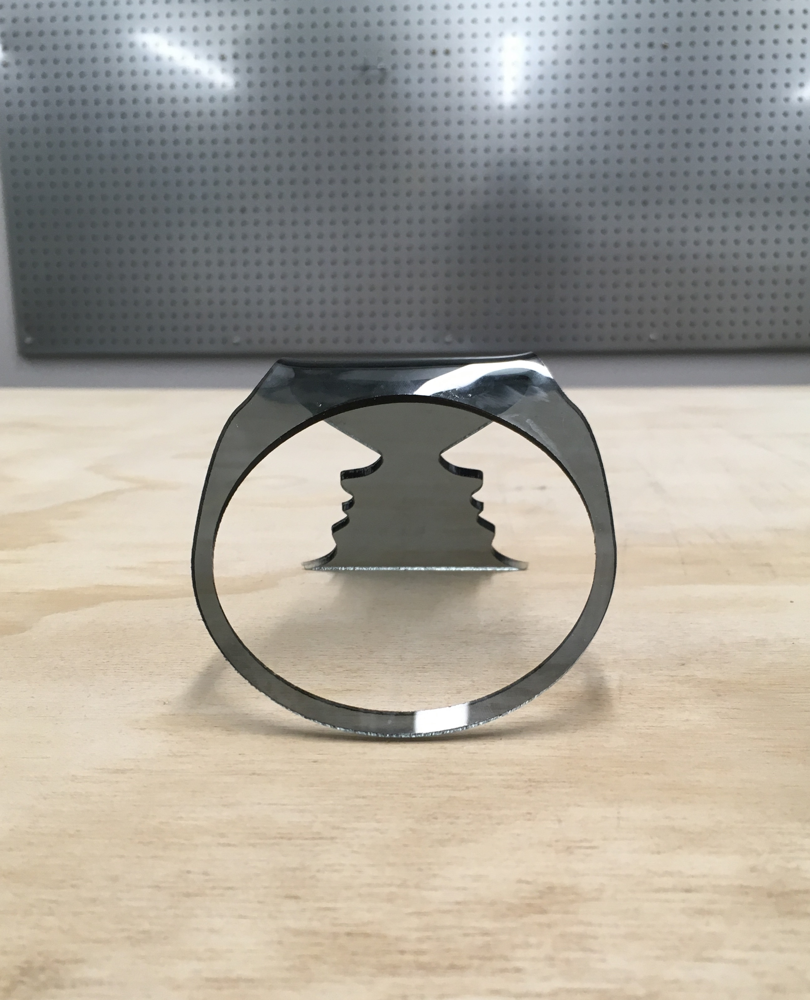
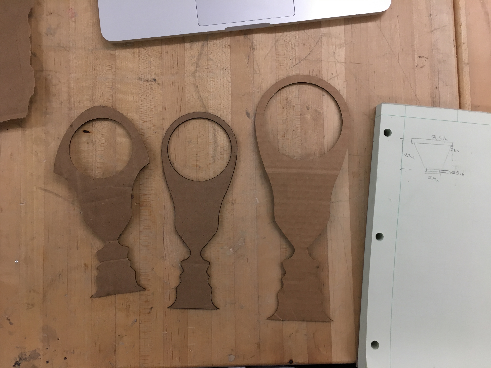

Home | DIY Projects
Rubin Co. VSE-1915 Cup Handle

Product Description
The Rubin Co. VSE-1915 single-sheet coffee cup handle ensures a steady grip on hot (or cold) beverages, and ameliorates the burns or spills an otherwise grip-less cup may be prone to. Never again will your eyes be bored while drinking coffee, as the single-sheet of acrylic is cut and formed to create an ergonomic grip, but also to create a face-vase illusion along the handle. Click Here for the product flyer pdf.
Product Features
- Acrylic handle fits snugly and ensures a steady grip
- Edgar Rubin's Vase-Face illusion along the handle adds a unique artistic flair
- handle ridges ensure easy grip surface
Final Product Images


 

Design and Fabrication Proccess Documentation



The Rubin Co. VSE-1915 single-sheet coffee cup handle ensures a steady grip on hot (or cold) beverages, and ameliorates the burns or spills an otherwise grip-less cup may be prone to. Never again will your eyes be bored while drinking coffee, as the single-sheet of acrylic is cut and formed to create an ergonomic grip, but also to create a face-vase illusion along the handle. Click Here for the product flyer pdf.
Product Features
- Acrylic handle fits snugly and ensures a steady grip
- Edgar Rubin's Vase-Face illusion along the handle adds a unique artistic flair
- handle ridges ensure easy grip surface
Final Product Images

Design and Fabrication Proccess Documentation
